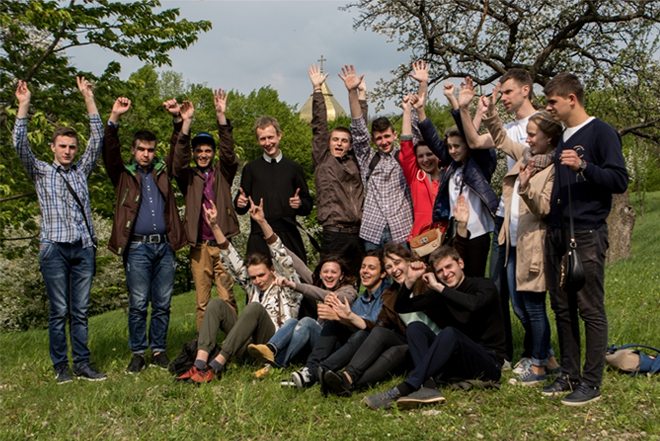
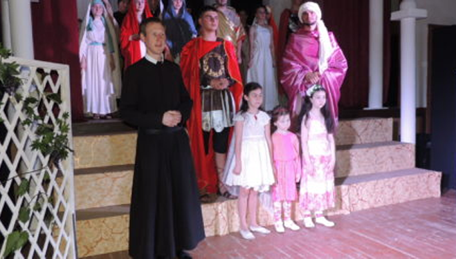
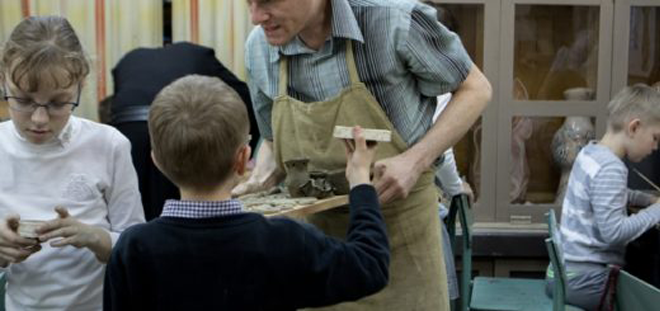
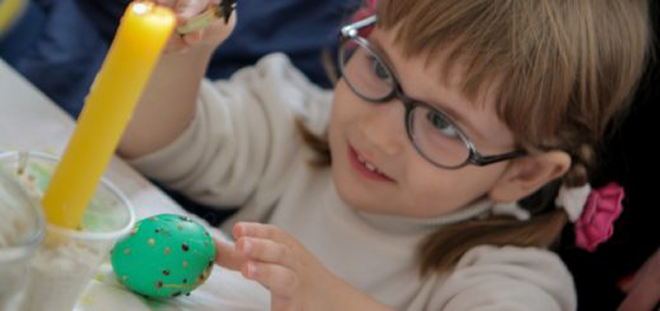
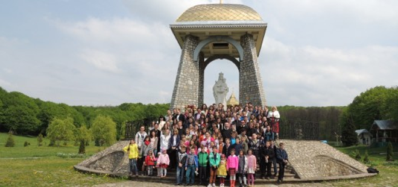
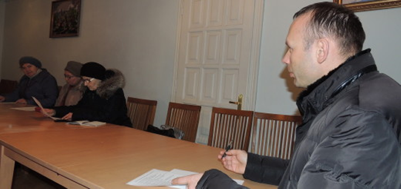

Спільнота аніматорів заснована у 2011 році
о. Іваном Логаєм, ЧСВВ.
Мета: катехизація дітей у поглибленні знання про основні правди християнської віри зі Св. Письма, формування християнського світогляду та цілісної людської особистості шляхом плекання християнських чеснот, сприяння розвиткові моральних, інтелектуальних і фізичних здібностей учнів, виховання підростаючого покоління в любові до Бога, Церкви й України. Сюди теж входить вивчення ігор, бансів, які допомагають дітям розважитись у світлі християнського життя, самовиховання молоді, яка є у спільноті, поглиблення знань основних правд християнської віри й виховання християнських лідерів з відчуттям відповідальності за інших.
Діяльність: проведення християнських таборів для дітей «Веселі канікули з Богом», провід Катехитичної школи ім. єпископа Григорія Балагурака, ЧСВВ, проведення різних гуртків, участь в організації визначених свят на парафії, підготовка дітей до першої Св. Сповіді й Урочистого Св. Причастя, участь в організації піших прощ, наприклад, до Гошева.
Духовний провідник: о. д. Амвросій Козак, ЧСВВ

Відбувся показ театральної вистави
“Що таке істина?”
Червень 06, 2016
04.06.2016 в актовій залі монастиря парафії Царя Христа відбулася прем’єра театральної вистави молодіжної спільноти аніматорів спільно з іншими парафіяльними спільнотами під назвою “Що таке істина?” (“Quid est Veritas?”). Вона була побудована на основі історичної повісті Наталени Королеви.

Для дітей відбувся майстер-клас із
художньої кераміки
Травень 5, 2016
У рамках Катехитичної школи ім. єпископа Григорія Балагурака, ЧСВВ відбувся майстер-клас із художньої кераміки. Діти відвідали майстерню Інституту мистецтв на базі Прикарпатського університету.

Проведено майстер-клас із писанкарства
Травень 4, 2016
У часі підготовки до Великодня нещодавно на парафії Царя Христа оо. Василіян уперше проведено майстер-клас із писанкарства. Метою проведення цього майстер-класу була популяризація українського сакрального мистецтва. Головна думка ‒ донести учасникам заходу те, що писанка є символом Воскресіння.

Завершилось урочисте святкування
Дня молоді у Квітну неділю
Травень 3, 2016
24.04.2016, у Квітну неділю, на парафії Царя Христа, як і кожного року, відсвяткували в урочистий спосіб День молоді в УГКЦ. До святкування долучилися різні парафіяльні молодіжно-дитячі спільноти («Осанна», «Істина», «Еммануїл», «Вівтарна Дружина», «Марійська Дружина», «Аніматори»...), учні шкіл міста, тощо.

Голови парафіяльних спільнот зустрілися
з ігуменом монастиря
Травень 2, 2016
Нещодавно ігумен і парох василіянського монастиря Царя Христа мав чергову зустріч із керівниками спільнот парафії.Після спільної молитви о. Йосафат представив присутнім порядок провадження хресних доріг у храмі та різні плани на майбутнє.